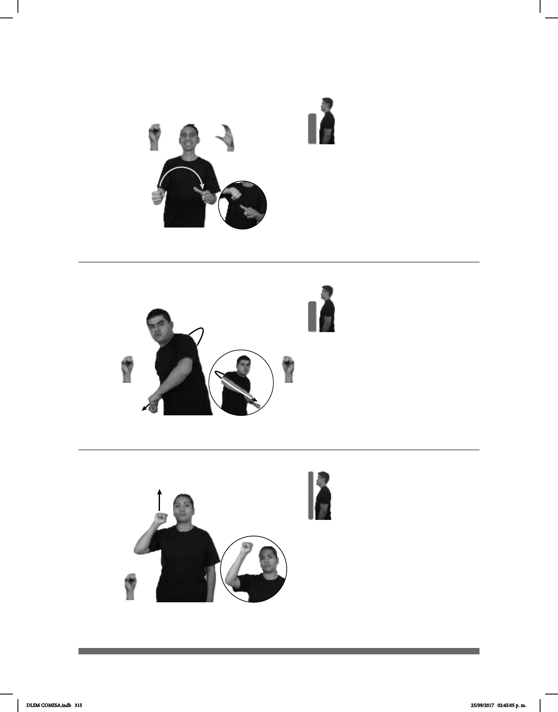

315
Seña: SB
MD S.1, MB C.1
MD palma hacia abajo.
MB palma hacia la derecha.
A la altura del pecho.
La MD se mueve
formando un arco hacia la izquierda.
Simula la acción de
servir un líquido.
sust. f. Recipiente,
generalmente grande y de cerámica o
vidrio, de cuello y boca anchos y con
un asa; se usa para contener y servir
líquidos.
(S-64)
AGUA SERVIR-JARRA pro-TÚ PODER POR-FAVOR
Puedes servir agua en la jarra, por favor.
Seña: SB
MD y MB S.1
MD y MB palmas hacia abajo.
De los hombros a la cintura.
MD y MB recto, de
derecha a izquierda y de izquierda a derecha
repetidamente.
Simula la acción de remar
en un kayak.
1. sust. m. Embarcación ligera
de más de cuatro metros, de remos, hecha de
tela alquitranada sobre un armazón de ma-
dera. 2. sust. f. Embarcación de remo o con
motor, estrecha, sin quilla y generalmente de
una pieza. La proa y la popa tienen la misma
forma y suelen terminar en punta.
(S-65)
1
/ Canoa
2
JOVEN
derecha
KAYAK HÁBIL
El joven es hábil en el kayak.
Seña: SM
S.1
Palma hacia afuera.
A la altura de la cabeza.
Recto hacia el frente
y hacia arriba.
Lago del estado de
Michoacán, México, ubicado a
63 km al oeste de la ciudad de
Morelia.
(S-66)
PRÓXIMO AÑO LUGAR LAGO-DE-PÁTZCUARO pro-NOSOTROS VIAJAR
Nosotros viajaremos el próximo año al Lago de Pátzcuaro.
DLSM COMISA.indb 315 25/09/2017 02:45:05 p. m.